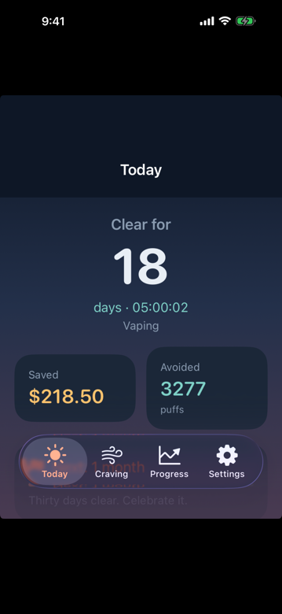
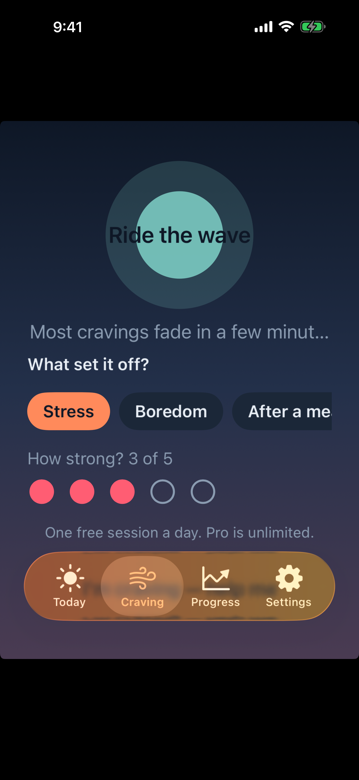
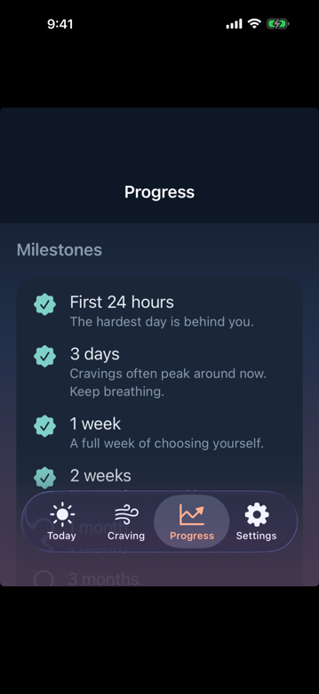

Days, hours, and seconds since you quit. Money saved and puffs, cigarettes, or pouches you did not use.
iPhone
Clearday
A calm way to quit vaping, smoking, or nicotine pouches. See every clear day, every dollar saved, and ride out a craving in about a minute.



What it does
A one-minute breathing guide with a gentle haptic. Log the trigger. One session a day is free. Pro is unlimited.
From the first 24 hours to a full year. A slip resets the clock without deleting your history.
Clearday Pro
Yearly · $39.99 after a 1-week free trial. About $3.33 a month.
Monthly · $7.99 with no trial.
Pro unlocks unlimited Craving SOS plus trigger charts. The counter and milestones stay free. Payment is charged to your Apple ID and renews unless you cancel at least 24 hours before the period ends.
App Store
Clearday is a wellness tool, not medical advice. Bundle ID com.jnovikow.Clearday · © 2026 Justin Novikow